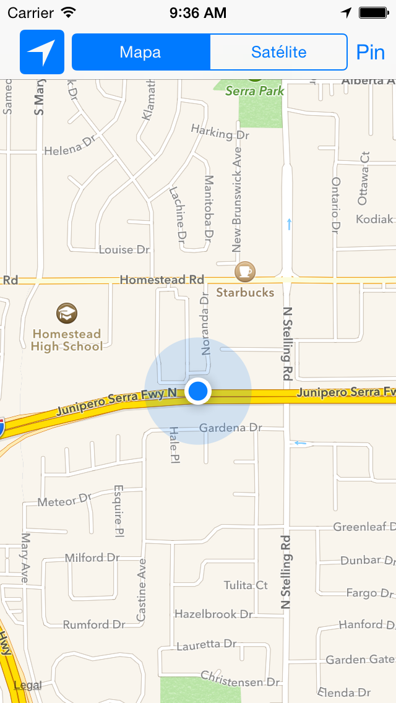

Práctica 2: Mapas y localización¶
1. Antes de empezar la clase presencial¶
-
Antes de la clase presencial deberás mirar los tres vídeos con demostraciones que podrás encontrar en Moodle, en la sesión 2.
-
Una vez vistas estas demostraciones, debes leer los siguientes apartados del tema de teoría:
-
Aspectos básicos de MapKit: desde Aspectos básicos de MapKit hasta Uso del delegado (incluido). Explicación de la creación de mapas en una app y del uso del delegado para procesar las acciones del usuario sobre el mapa.
-
Anotaciones: desde Anotaciones hasta Elementos en el callout (incluido). Explicación de la creación y uso de anotaciones. Con estos apartados y los anteriores puedes hacer la parte obligatoria de la práctica.
-
2. Parte obligatoria (hasta 7 puntos)¶
-
Debes crear la app
es.ua.mastermoviles.Mapas. -
Empieza por definir un View Controller en el que debes incluir un mapa centrado inicialmente en Alicante. Inclúyelo en un Navigation Controller con la opción Editor > Embed In > Navigation Controller.
-
Añade en el centro de la barra del Navigation Controller un Segmented Control con los valores
MapaySatélite, conéctalos con el ViewController y haz que el mapa cambie de tipo cuando se pulse en el control.

-
En el Storyboard añade un
Bar Button Itemen la parte derecha de la barra de navegación. -
Llámalo
Piny enlázalo con una acción en elViewControllerque añada una anotación en el mapa.

-
Añade en los callouts imágenes thumbnails predefinidas, dependiendo de si el número de pin es par o impar.
-
Añade en los callouts el botón de información.
3. Parte opcional (3 puntos)¶
Debes leer los siguientes apartados del tema de teoría:
-
Geocoding: desde Geocoding hasta Conversión de placemarks en localizaciones (incluido). Explicación de la técnica de geocoding (obtención del nombre a partir de las coordenadas geográficas). Este apartado se usan para la primera parte opcional de la práctica.
-
Localización: explicación de cómo activar y acceder a los servicios de localización. Necesario para la tercera parte opcional de la práctica.
Parte opcional 1
- Implementa un segue que haga aparecer otra vista con un detalle
de la foto. Puedes definir un segue haciendo control click desde un
view controller hasta otro. Después debes dar un identificador al
segue. Por ejemplo
DetalleImagen.


Parte opcional 2
- Implementa una llamada al servicio de geolocalización que coloque como subtítulo del Pin el país en el que se ha colocado el mismo.
Parte opcional 3
-
Añade el tracking de localización a la aplicación, imprimiendo la localización en la salida estándar cada 10 metros. Comprueba el funcionamiento activando la localización en el simulador.
-
Añade la localización al mapa, haciendo que aparezca en la parte izquierda de la barra de navegación el botón de navegación.
-
Cuando pulses el botón de navegación se debe mostrar la posición actual del dispositivo.
-
Deberás modificar la función que muestra la vista de una anotación (
mapView(_:viewFor:)) porque se utiliza también para mostrar la vista de la posición actual del dispositivo (que también es una anotación). Si la anotación que se quiere mostrar no es de tipo Pin debes poner la vista anilpara que se use la vista por defecto (el círculo).
-

4. Entrega¶
Entrega una carpeta comprimida con el proyecto y un pequeño documento PDF en el que expliques las funcionalidades implementadas.
Si el tamaño de la entrega supera los 20MB, sube la entrega a Google Drive o similar e incluye un enlace.